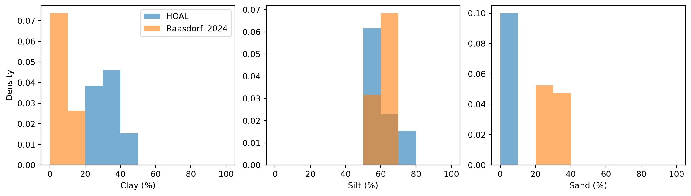
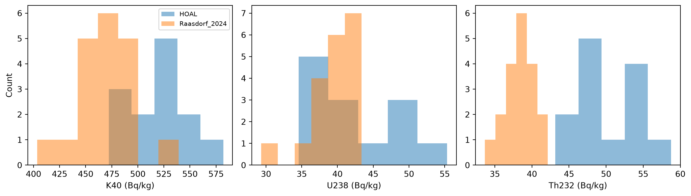
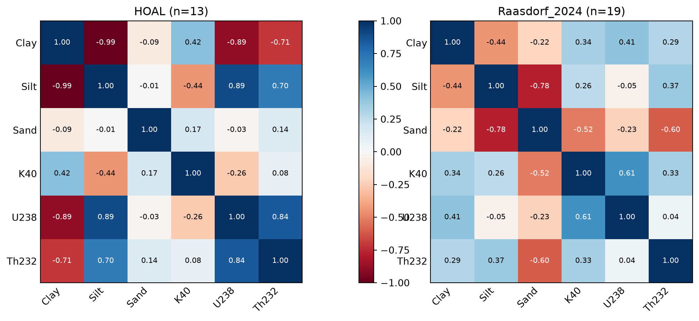
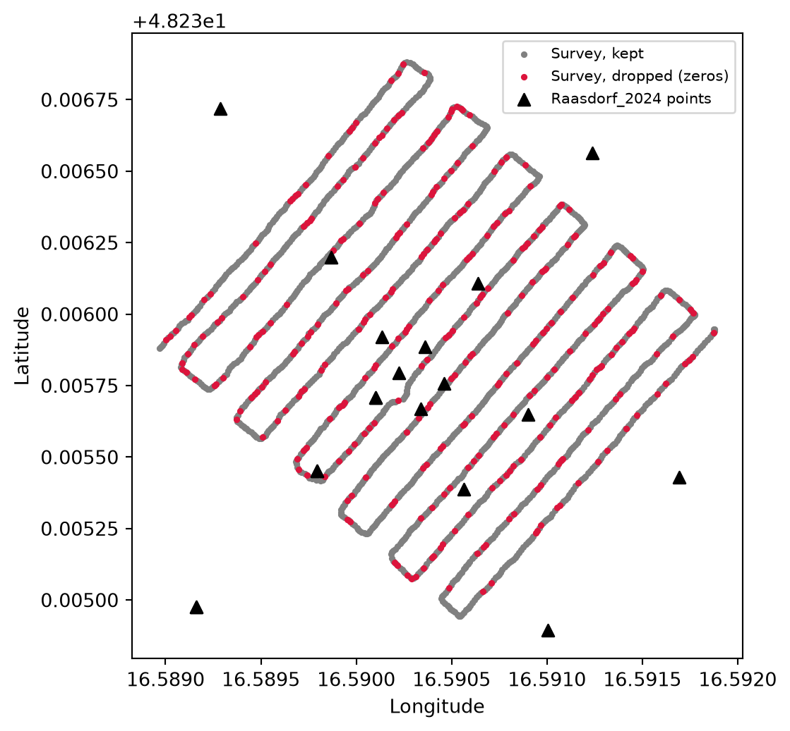

import numpy as np
import pandas as pd
import matplotlib.pyplot as pltExploratory data analysis
Look at the data before modelling anything.
- getting the data
- summary statistics .describe() for each table, plus missing values, zeros and negatives in U238
- Histograms: clay, silt and sand for HOAL vs Raasdorf_2024, and U238, K40 and Th232 for all three datasets.
- Correlation: your heatmap and VIF (Step 2) belong here, not in the modelling.
- Data checks: do sand and silt and clay add up to 100%? How far apart are the 19 Raasdorf points from their nearest survey reading (dist_m)? Are there duplicate coordinates?
The goal of this analysis is a transfer model: fit a relationship between gamma-ray values and soil texture at one site (HOAL), then use it at another (Raasdorf). A transfer only works if the two sites look alike. So the questions on this page are simple ones:
- Do the soil textures at the two sites cover the same range?
- Are the Raasdorf gamma-ray values inside the range HOAL was measured on?
- Do the isotopes relate to texture in the same way at both sites?
Set up
Getting data
This loads and renames the same three tables as Loading gamma-ray and soil data, in one go.
hoal = pd.read_csv("data/HOAL.csv")
hoal = hoal.rename(columns={"Sand_2023": "Sand", "Clay_2023": "Clay", "Silt_2023": "Silt"})
raasdorf_2024 = pd.read_csv("data/Raasdorf_2024.csv")
raasdorf_2026 = pd.read_csv("data/Raasdorf_2026.csv")
raasdorf_2026 = raasdorf_2026.rename(columns={"40-K": "K40", "238-U": "U238", "232-Th": "Th232"})
for table in (hoal, raasdorf_2024, raasdorf_2026):
table["Ratio"] = table["U238"] / table["Th232"].replace(0, np.nan)
isotopes = ["K40", "U238", "Th232"]
texture = ["Clay", "Silt", "Sand"]Zeros in the Raasdorf_2026 survey
Some rows in the survey have an isotope value of exactly zero. These zeros are not measurements of “no uranium”. They come from the way the spectra are analysed.
The standard least-squares fit can return negative concentrations when a spectrum has very few counts, because the maths is happy with negative values. To avoid that, the survey is analysed with non-negative least squares (NNLS): if a concentration comes out negative, it is set to zero and the fit is repeated with the remaining nuclides (medusa_negative?). The constraint itself was introduced into full-spectrum analysis to avoid non-physical results (caciolli2011?).
A zero therefore means “too weak to say”, not “measured as zero”. We count them, keep a copy of the full survey for the map further down, and then drop every row where K40, U238 or Th232 is zero:
print(f"Rows in the survey: {len(raasdorf_2026)}")
for iso in isotopes:
print(f"{iso}: {(raasdorf_2026[iso] == 0).sum()} zeros")
survey_all = raasdorf_2026.copy()
raasdorf_2026 = raasdorf_2026[(raasdorf_2026[isotopes] > 0).all(axis=1)]
print(f"Rows kept: {len(raasdorf_2026)}")
print(f"Rows dropped: {len(survey_all) - len(raasdorf_2026)}")Rows in the survey: 2019
K40: 1 zeros
U238: 273 zeros
Th232: 68 zeros
Rows kept: 1678
Rows dropped: 341The > 0 test also removes any negative or missing value, so it is safe even if the file changes later. We filter on the three natural isotopes only. Cs137 is also in the file, but the analysis doesn’t use it.
From here on we work with the cleaned tables. We put them in one dictionary so later code can loop over them:
tables = {"HOAL": hoal, "Raasdorf_2024": raasdorf_2024, "Raasdorf_2026": raasdorf_2026}
WarningWhat dropping the zeros costs
The dropped rows are, most often, spectra with very few counts. Removing them cuts off the low end of the distribution. The values that remain are, on average, a little higher than the full survey, and low-signal spots are under-represented. The Medusa documentation points to the same thing: because negatives are clamped to zero, the distribution of concentrations has a cut-off at zero and no longer follows Poisson statistics (medusa_negative?).
How large the effect is depends on how many rows are dropped. That is why we print the counts above and map where the dropped rows are, below. An alternative is to keep the zeros and treat them as “below detection”, but that is more complex, so we drop them and state the limitation.
Summary statistics
The quickest way to see a table is .describe(). It gives the count, mean, spread and quartiles of each column.
for name, table in tables.items():
print(name)
print(table[isotopes].describe().round(1))
print()HOAL
K40 U238 Th232
count 13.0 13.0 13.0
mean 520.4 42.7 50.5
std 30.7 6.2 4.4
min 472.1 34.6 43.2
25% 499.6 37.8 48.0
50% 518.1 40.6 48.3
75% 537.8 48.1 54.0
max 581.9 55.3 58.8
Raasdorf_2024
K40 U238 Th232
count 19.0 19.0 19.0
mean 468.5 39.3 38.5
std 26.7 3.2 2.1
min 403.5 29.3 33.7
25% 456.1 38.3 37.4
50% 470.6 39.3 38.6
75% 483.6 41.5 39.9
max 539.2 43.4 42.1
Raasdorf_2026
K40 U238 Th232
count 1678.0 1678.0 1678.0
mean 486.3 45.7 42.3
std 192.0 26.8 20.7
min 5.8 0.1 0.1
25% 349.3 25.0 27.0
50% 473.1 42.7 42.2
75% 603.8 64.2 56.9
max 1145.5 144.0 103.8
The same for soil texture, which only HOAL and Raasdorf_2024 have:
for name in ["HOAL", "Raasdorf_2024"]:
print(name)
print(tables[name][texture].describe().round(1))
print()HOAL
Clay Silt Sand
count 13.0 13.0 13.0
mean 32.7 60.3 6.9
std 7.6 7.5 0.8
min 20.3 50.6 5.9
25% 26.5 54.7 6.4
50% 34.7 57.5 6.6
75% 38.6 66.7 7.7
max 41.2 73.1 8.2
Raasdorf_2024
Clay Silt Sand
count 19.0 19.0 19.0
mean 8.5 62.3 29.2
std 2.3 3.7 3.4
min 4.4 57.2 23.8
25% 6.6 59.4 26.5
50% 9.1 61.6 28.7
75% 10.0 64.6 32.3
max 12.1 69.1 35.0
Sand, silt and clay are parts of one whole, so they should add up to 100%. A quick check, along with any missing values:
for name in ["HOAL", "Raasdorf_2024"]:
table = tables[name]
table[texture] = table[texture].apply(pd.to_numeric, errors="coerce")
totals = table[texture].sum(axis=1)
print(f"{name}: sand + silt + clay ranges from {totals.min():.1f} to {totals.max():.1f}")
print(f"{name}: missing values in texture and isotopes: {table[texture + isotopes].isna().sum().sum()}")HOAL: sand + silt + clay ranges from 100.0 to 100.1
HOAL: missing values in texture and isotopes: 0
Raasdorf_2024: sand + silt + clay ranges from 99.9 to 100.1
Raasdorf_2024: missing values in texture and isotopes: 0Histograms
Soil texture: HOAL vs Raasdorf_2024
The two sites have different numbers of samples, so the histograms show density instead of counts. That way the bars are comparable.
bins = np.arange(0, 101, 10)
fig, axes = plt.subplots(1, 3, figsize=(12, 3.5))
for ax, col in zip(axes, texture):
ax.hist(hoal[col], bins=bins, density=True, alpha=0.6, label="HOAL")
ax.hist(raasdorf_2024[col], bins=bins, density=True, alpha=0.6, label="Raasdorf_2024")
ax.set_xlabel(f"{col} (%)")
axes[0].set_ylabel("Density")
axes[0].legend()
plt.tight_layout()
plt.show()
With only a handful of samples per site, treat these shapes as a rough guide.
Gamma-ray values: all three datasets
The grey band marks the range of HOAL, where the model is fitted. Raasdorf values outside the band mean the model would have to extrapolate.
fig, axes = plt.subplots(1, 3, figsize=(12, 3.5))
for ax, iso in zip(axes, isotopes):
for name, table in tables.items():
if name == "Raasdorf_2026":
continue
ax.hist(table[iso].dropna(), bins="auto", alpha=0.5, label=name)
ax.set_xlabel(f"{iso} (Bq/kg)")
axes[0].set_ylabel("Count")
axes[0].legend(fontsize=8)
plt.tight_layout()
plt.show()
The same thing in numbers: the share of Raasdorf values that fall outside the HOAL range.
rows = []
for iso in isotopes:
hoal_vals = hoal[iso].dropna()
low, high = hoal_vals.min(), hoal_vals.max()
for name in ["Raasdorf_2024"]:
values = tables[name][iso].dropna()
outside = ((values < low) | (values > high)).mean() * 100
rows.append({
"isotope": iso,
"HOAL range": f"{low:.1f} to {high:.1f}",
"Raasdorf 2024 range": f"{values.min():.1f} to {values.max():.1f}",
"% outside": round(outside, 1),
"n": len(values),
})
df = pd.DataFrame(rows)
df| isotope | HOAL range | Raasdorf 2024 range | % outside | n | |
|---|---|---|---|---|---|
| 0 | K40 | 472.1 to 581.9 | 403.5 to 539.2 | 52.6 | 19 |
| 1 | U238 | 34.6 to 55.3 | 29.3 to 43.4 | 5.3 | 19 |
| 2 | Th232 | 43.2 to 58.8 | 33.7 to 42.1 | 100.0 | 19 |
Correlation
A correlation matrix shows, in one picture, which columns move together. We draw it for HOAL and for Raasdorf_2024 side by side, because a transfer model only makes sense if the isotopes relate to texture in the same direction at both sites.
def heatmap(ax, table, title):
cols = texture + isotopes
corr = table[cols].corr()
image = ax.imshow(corr, cmap="RdBu", vmin=-1, vmax=1)
ax.set_xticks(range(len(cols)), cols, rotation=45, ha="right")
ax.set_yticks(range(len(cols)), cols)
ax.tick_params(length=0)
ax.grid(False)
for i, j in np.ndindex(corr.shape):
value = corr.iloc[i, j]
color = "white" if abs(value) > 0.5 else "black"
ax.text(j, i, f"{value:.2f}", ha="center", va="center", color=color, fontsize=8)
ax.set_title(title)
return image
fig, axes = plt.subplots(
1, 3,
figsize=(13, 5),
gridspec_kw={"width_ratios": [1, 0.05, 1]},
)
heatmap(axes[0], hoal, f"HOAL (n={len(hoal)})")
image = heatmap(axes[2], raasdorf_2024, f"Raasdorf_2024 (n={len(raasdorf_2024)})")
fig.colorbar(image, cax=axes[1])
plt.show()
Two things to look for. First, whether the signs of the isotope-texture correlations (K40, U238 and Th232 against clay, silt and sand) match between the panels. Second, how strongly the three isotopes correlate with each other, because two predictors that track each other carry the same information twice.
HOAL (n = 13). Clay and silt are almost perfectly opposed (r = −0.99), so sand barely varies and the two carry the same signal. Both relate strongly to U238 (clay −0.89, silt +0.89), and clay also to Th232 (−0.71).
Raasdorf_2024 (n = 19). Clay and silt are only weakly opposed (r = −0.44), so sand varies independently. The isotope-texture correlations are weak: clay and U238 are +0.41, against −0.89 at HOAL, and sand and K40 are −0.52, against +0.17 at HOAL.
The relationships seen at HOAL do not appear at Raasdorf. A model fitted on HOAL should therefore not be expected to transfer without adjustment.
Where the points are
The Raasdorf_2024 table has a position for each point. We check that no two points share the same coordinates:
duplicates = raasdorf_2024.duplicated(subset=["Longitude", "Latitude"]).sum()
print(f"Raasdorf_2024 points sharing exact coordinates with another point: {duplicates}")Raasdorf_2024 points sharing exact coordinates with another point: 3And we plot the 2026 survey, with the rows dropped for zeros in red, so you can see whether the dropped rows are scattered evenly or concentrated in one area. The Raasdorf_2024 points are shown as triangles.
dropped = survey_all.drop(raasdorf_2026.index)
fig, ax = plt.subplots(figsize=(7, 6))
ax.scatter(raasdorf_2026["Longitude_GPS"], raasdorf_2026["Latitude_GPS"],
s=6, color="gray", label="Survey, kept")
ax.scatter(dropped["Longitude_GPS"], dropped["Latitude_GPS"],
s=6, color="crimson", label="Survey, dropped (zeros)")
ax.scatter(raasdorf_2024["Longitude"], raasdorf_2024["Latitude"],
marker="^", s=40, color="black", label="Raasdorf_2024 points")
ax.set_aspect(1 / np.cos(np.radians(survey_all["Latitude_GPS"].mean())))
ax.set_xlabel("Longitude")
ax.set_ylabel("Latitude")
ax.legend(fontsize=8)
plt.show()
Before moving on
The plots above should answer three questions: do the textures overlap, are the Raasdorf isotope values inside the HOAL range, and do the isotopes and texture move together in the same direction at both sites. If the answer to any of them is “not really”, that is a limit on what a transfer model can do, and we carry it into the modelling pages.